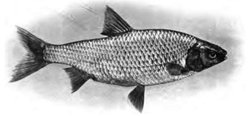
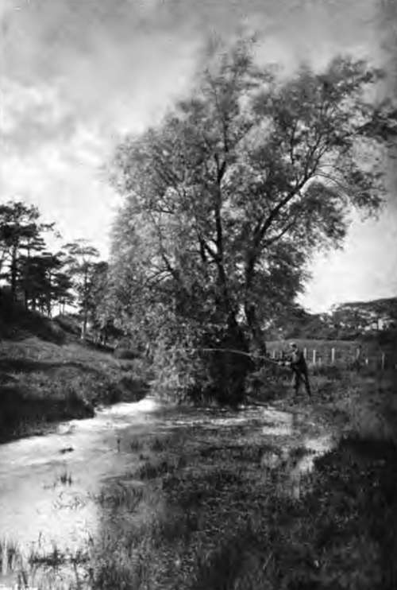

Chapter XVII. Angling For Roach
Description
This section is from the book "Fishing", by Horace G. Hutchinson. Also available from Amazon: Fishing.
Chapter XVII. Angling For Roach
Some anglers cannot understand why fishing for roach should be such fascinating sport to so many anglers; there are probably a score of roach anglers for every one who prefers fishing for perch, chub, dace, etc. Doubtless one reason is that roach are found in larger numbers than any other fish in the waters near our principal English towns; also, because the tackle required is not expensive, and the style of fishing is not difficult to learn. But in addition to these and other reasons for the popularity of roach fishing there is no doubt that it has a peculiar fascination of its own. I have had probably more fishing of different kinds from salmon to minnow than falls to the lot of the majority of anglers, but I have never outgrown my love for roach fishing, and hope there may still be in store days on the Thames, Lea, or Avon, with a keen roach angler as companion. In France the roach is also a great favourite; it is called Gardon, also Rosse.
It is easy enough to catch roach where they are plentiful and not much sought after, but it is very difficult to get a good take of roach in a water regularly fished. I for some years had the fishing in a deep pond fed by springs, and of a good size and full of fish of all kinds. For the first year or two it was easy enough to catch the roach, but gradually they became as wary as the carp, and although we could see them in the clear water, and often watched them feeding on the tender young shoots of water plants, we could never tempt them to bite.
There being no fish which gives greater pleasure to a greater number of our English anglers than the roach, it is not to be wondered at that there have been angry protests when suggestions have been made that roach and dace should be destroyed in order to make room for other fish; fortunately his friends are too numerous to permit of any fear of his extinction. It is curious what erroneous ideas some anglers of the present day have as regards the kind of tackle used by anglers of the past. They laugh at " Old Izaak" and his methods as being clumsy, and only suited for taking uneducated fish. This shows they have never taken the trouble to read " The Compleat Angler " carefully or they would have to admit that in the days when it was usual to fish for nearly all fish except salmon and pike with a single hair, there was little room for clumsy methods. Some thirty years ago a celebrated angling writer almost doubted the existence of roach of 2 lbs., but in the Fishing Gazette since then I have recorded the capture of some true roach over 2½ lbs. in weight, and many over 2 lbs. Salter, writing nearly ioo years ago, says: "Roach seldom exceed 2 lbs. in weight, though I have known some taken weighing more than 3 lbs.;" and I have no doubt there were plenty of fine roach in our rivers in Walton's time, when it was more difficult to catch them, for the simple reason that they had no drawn gut and were obliged to use hair. Many good roach anglers of the present day still prefer good horse hair, and although drawn gut can be obtained both finer and stronger and I always use it, I am quite ready to admit that I rather envy the enthusiastic roach angler who always " fishes hair" with a tight line-i.e. without a reel line. Salter, writing early last century, says: " The taking thirty pounds weight or more of roach, from six to eight ounces to a pound or upwards, out of a stream from six to ten feet deep, with a very light rod, single hair line, and No. 10 or 11 hook, in a day's angling (which is frequently done by the London anglers), affords as much amusement to some as any other mode of fishing ; indeed I am acquainted with many anglers who seldom wet a line but for roach, preferring it to every other kind of fishing,"
On the Lea and other rivers near London anglers who fish from the bank generally use a very long bamboo rod, exactly as described by Salter, who says, in describing how to " take heavy roach " (and those only are worth taking) " like an artist, you must use a light cane rod, from eighteen to near twenty feet long, with a fine light stiff top, a single hair line, a tip-capped float, and No. 10 or 11 hook." He says the roach hook should be very short in the shank, as the roach's mouth is very small. My old friend, the late Mr. Greville Fennell, author of the " Book of the Roach," used to fish in the Norfolk rivers and broads a good deal, where fine tackle for roach fishing is not nearly so necessary as on the Lea and Thames. He strongly advocated a hook for roach angling with a long shank and not snecked, i.e. with no side twist of the barb. He called it the " Crystal" hook, as it was first used by a fisherman of the name of Crystal, who often went out with him, and this hook is now in general use for roach fishing. In theory the Crystal hook is all right, but if our grandfathers could, and undoubtedly did, kill thirty to forty pounds of grand roach in a day, using the very short shank, round bend, fine wire roach hook, as recommended by Salter, surely there was not much the matter with it. I hope some enthusiastic roach angler who reads these lines will give the two hooks a good trial one against the other, and shall not be at all surprised if the short shank wins. In the first place, you can cover the whole hook with a small pellet of paste, whereas if you use a long shank the pellet must be larger or the shank must be left exposed. Secondly, the fish can suck in the small round pellet in which the hook is entirely hidden more easily than the baited long shank hook, and it has often seemed strange to me that I missed so many bites when using a " Crystal" hook, especially if the fish were biting gingerly and when using paste.
38.- Roach.
39.- A Pretty Stream.
Salter's description of fishing with the long rod and tight line cannot be improved upon. He says: The line which he recommends is to be made of two twisted hairs for the upper part with two or three single hairs for the lower half, and arranged as regards length, so that you can fish with only about twelve to eighteen inches between the end of the rod and the float "or you will not hit a fine bite," by fine he means a delicate touch which is hardly perceptible. "The line must be so shotted with very small shot, that not much more than an eighth of an inch of the float appears above the water; for roach frequently (and very often the heaviest of them) bite so finely or gently that without alluding to the above niceties in adjusting your line, you will lose the chance of two bites out of three. In angling for roach a sitting posture is to be preferred, as by that means you are more out of their sight. Always keep the top of your rod up over the float, and so high that none of the line above the float lies on or touches the water; and when you see the least movement of the float, either by its being pulled down or thrown a little up, strike quick, but lightly (the motion coming from your wrist, not from the arm), for if the jerk is too violent you will break the line, which need not be hazarded, as the least jerk hooks those tender-mouthed fish. If you have 'hit' or hooked a fish, raise the top of the rod, keeping him as much under the top as you can, and the butt downwards, nearly touching the ground, and by thus playing him under the point of your rod he will soon be your own." Personally I never fish without a running line in any water where I know that in addition to roach there are other fish, such as chub, barbel, tench, etc, which will often take the paste, gentle worm, caddis, or other bait used for roach, but in order to fish with the tight line, so essential for quick striking in roach fishing, I put a bit of twig or match crossways on the line, so that when the reel is wound up it comes against the end ring, and the check on the winch holds it there, and then if I hook a big fish I am able to give him line; and to kill a 5 or 6 lb. fish on the finest drawn gut and roach hook is highly satisfactory. Taking the whole season through, I doubt if there is any better roach bait than paste, or any better ground bait than bread and bran mixed well and kneaded into soft balls. For river fishing in a fairly good current a little cotton wool worked into the paste will prevent its being pulled off the hook, when the line is taken out of the water after each swim down.
Continue to: